新一代互连技术 CXL 及应用综述¶
I. Introduction¶
过去 20 年间，计算硬件的峰值算力增加了 60 000 倍，内存带宽提升 100 倍，但互连带宽却只提高了 30 倍。计算、内存、互连等技术的性能发展速度不匹配，导致“内存墙”与“IO 墙”问题日趋严重，传统的计算架构逐渐成为新型应用发展的瓶颈。
为突破计算系统中硬件资源互连的性能瓶颈，近年来涌现了 Gen-Z，OpenCAPI，CXL（compute expressl ink）， NVLink-C2C， CCIX 等多种新型互连协议，它们提供了计算单元间的缓存一致性维护功能，使得 CPU 与加速器间的数据交互更为高效。其中，CXL，OpenCAPI 等协议通过维护 CPU 与加速器间的缓存一致性，显著优化了数据交换效率
II. CXL Interconnect Protocol¶
CXL 延续了 PCIe 的分层架构：
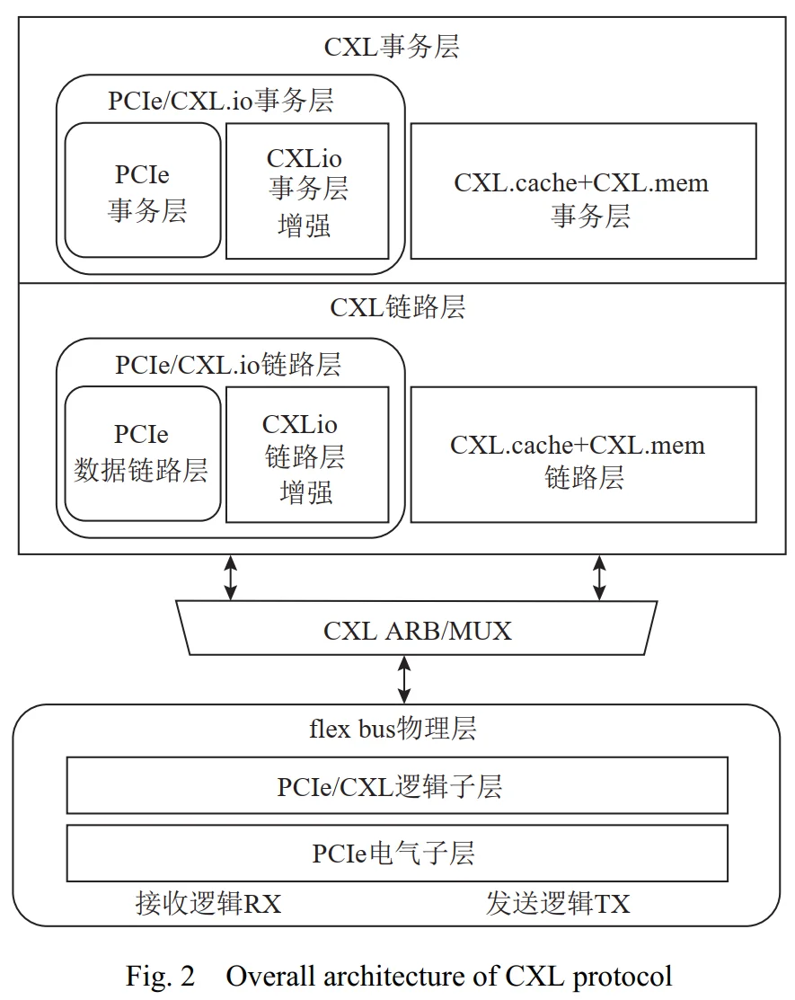
- 物理层负责物理信息交换、链路初始化与维护；
- 数据链路层负责可靠的数据传输服务，包括流量控制和信用等机制；
- 事务层处理与每个协议相关联的事务，进行协议消息的封装和解析。
CXL是一种多协议架构，共包含 3 个子协议：
CXL.io，CXL.cache，CXL.mem，其中 CXL.io 基于 PCIe协议负责设备发现、配置地址空间、主机物理地址查找和中断 DMA 操作等，并为 IO 设备提供非一致性的 load/store 访问。 CXL.cache 和 CXL.mem 是新增的协议类型，可以实现主机与设备之间基于缓存一致性的内存访问，两者共享链路层与事务层，并借助动态仲裁复用机制（ARB/MUX）在 PCIe 物理层上实现协议融合传输。
2.1 CXL.cache 协议¶
CXL.cache 使 CXL 设备能够低延迟高效地缓存主机内存中的数据，并通过通道中传输的事务消息来维护设备缓存与主机的一致性。 CXL.cache 定义了主机（host，H）与设备（device，D）间的 6 种消息通道：D2H Req，D2H Resp，D2H Data， H2D Req，H2D Resp，H2D Data（Req：请求，Resp：响应，Data：数据）
下图展示了主机内存被 CXL 设备 1 和 CXL 设备 2 共享，由 CXL.cache 协议维护主机与设备缓存一致性的一个典型事务交互流程。
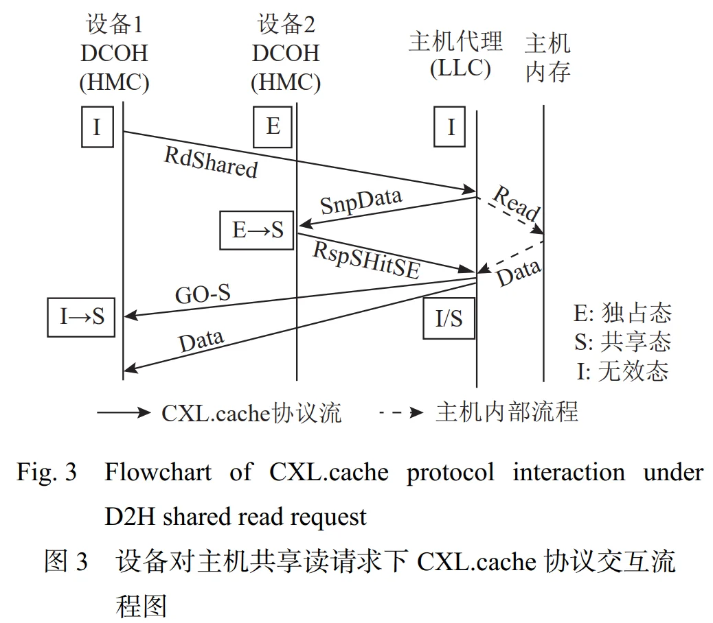
本流程完成的事务是：设备 1 以共享方式（S）缓存主机内存地址 64 B 数据，流程如下：
- 初始时设备 1 的 HMC（host memory cache） 中没有该主机数据的副本（处于无效态（I）），而设备 2 缓存中存在该数据的独占态副本（E）。
- 设备 1 首先向主机代理发送 RdShared 请求（D2H Req）
- 主机代理接收到该请求后：
- 对设备 2 缓存行发起 SnpData 监听（H2D Req），请求其缓存中数据副本由 E 态修改为 I 态或 S 态
- 设备 2 的设备一致性引擎（device coherency engine，DCOH）处理主机监听请求并把缓存行状态修改为 S 后发送 RspSHitSE 响应（D2H Resp）给主机，主机对设备 2 的监听结束。
- 在主机代理发送对设备 2 监听消息的同时，也对主机内存发送了读数据请求
- 对设备 2 缓存行发起 SnpData 监听（H2D Req），请求其缓存中数据副本由 E 态修改为 I 态或 S 态
- 收到数据和 RspSHitSE 响应消息后，主机发送 GO-S 响应（H2D Resp） 给设备 1 然后返回请求数据（H2D Data）
- 主机 LLC（last level cache） 从状态 I 变为 S 或者仍为 I（由主机代理决定）
从而设备 1 获得该数据的共享态副本，完成交互流程。
2.2 CXL.mem 协议¶
CXL.mem 允许主机处理器将连接的 CXL 设备内存视为其内存地址空间的一部分，可以使用 load/store 命令访问设备连接的内存，并维护主机缓存和设备内存数据的一致性。
在 CXL 3.0 版本中， CXL.mem 定义了主设备（master，M）到从设备（subordinate，S）间的 6 种消息通道：
- M2S Req, Req: 未携带数据的请求
- M2S RwD, RwD: 携带数据的请求
- M2S BIRsp, BIRsp: 反向无效应答
- S2M NDR, NDR: 未携带数据的应答
- S2M DRS, DRS: 携带数据的应答
- S2M BISnp, BISnp: 反向无效监听
其中，反向无效监听通道可以用来实现设备HDM（host-managed device memory）的一致性。
图 4. 展示了设备利用反向无效监听机制维护主机缓存与设备一致性的交互流程
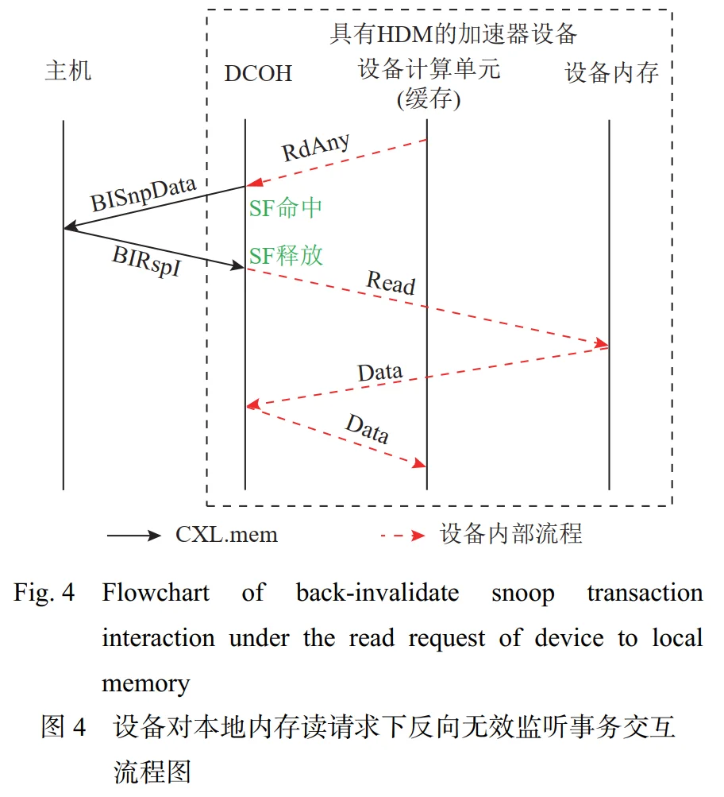
该图描述的不是“CPU 通过 CXL.mem 去读设备内存”，而是“设备上的计算单元要读取自己的本地 HDM；但由于主机 CPU 可能已经缓存了这块设备内存的数据，所以设备先通过 CXL.mem 的 Back-Invalidate 机制让主机把对应缓存行无效掉，再读取自己的本地内存”。详细流程如下：
-
初始状态：Device 想要访问其本地内存（Host-managed Device Memory，即 HDM）中的某条数据 A，但是 Host CPU 中可能有 A 的缓存副本，因此 DCOH (Device Coherency Engine) 中的 Snoop Filter 记录了："A → Host currently has a cached copy"。
因此如果 Device 本次真的只是读取 A，而不修改 A 也不通知 Host，乍一看好像没什么问题。但是一旦 Device 后续修改了 Cache 中的 A，而 Host 中仍旧保存了旧副本，缓存一致性就被破坏了。所以 HDM-DB 采用的策略之一是：在设备侧开始使用这条 cache line 之前，把 Host 中的副本赶出去。这就是所谓的 "Back Invalidate" 机制。
案例中没有交代 Host Cache 中 A 的状态是 S/E 还是 M，无法把图 4. 自动扩展成“Host 可能有 Modified dirty data”，那需要进一步看 CXL Spec 的具体 BI snoop 语义 -
Step 1. “设备发送 RdAny 请求，旨在对任何状态下的缓存行进行完整读取”，语义近似：“我要 A 这整个 cache line，不管当前系统中它处于什么 coherence 情况，请帮我把它安全地拿过来。”，这条指令不是跨 CXL Link 的，而是设备内部的指令。
- Step 2. DCOH 查询 Snoop Filter。设备 DCOH 中监听过滤器（snoop filter， SF）命中，表示在主机缓存中存在有设备要读取数据的副本
- Step 3. Device → Host：BISnpData。DCOH 向主机发送 BISnpData 请求（S2M BISnp 消息），请求反向无效监听该共享或独占态的副本数据。
- Step 4. Host 完成 invalidate，返回 BIRspI。主机返回 BIRspI 响应（M2S BIRsp 消息）给设备的 DCOH，表示完成了相应缓存行的反向无效监听，且主机缓存行处于无效态。
- Step 5. DCOH 释放 SF entry
- Step 6. DCOH 终于去读 Device Memory，Device Memory 返回 Data
一个关键问题：这明明只是 read，为什么还要 invalidate？
在最简单的 MESI 直觉里：Core 0 read A, Core 1 read A，完全可以：S + S，没必要 invalidate。
但图 4 描述的不是普通 CPU multicore MESI，而是 CXL 3.0 的 HDM-DB / Back-Invalidate coherence model。这个机制的重要特点是：Device DCOH 负责主动控制 Host 是否还能保留 HDM cache copy。在图 4 这个 transaction 中，设备在允许自身计算单元读取并使用这条 HDM line 之前，选择先将 Host 的对应 copy 无效掉。这样后续 device-side operation 就不需要同时维持："Host copy + Device-side cached copy" 之间复杂的共享状态。
CXL.cache 协议与 CXL.mem 协议的对比
图 3. (CXL.cache 协议) 和图 4. (CXL.mem 协议) 两件 transaction 的对比：
| 图 3：CXL.cache | 图 4：CXL.mem Back-Invalidate | |
|---|---|---|
| 数据物理上在哪 | Host Memory | Device Memory / HDM |
| 谁要访问 | Device | Device |
| Device 想访问谁的内存 | Host 的 | 自己的 |
| 谁管理 coherence | Host HA | Device DCOH |
| 谁发 snoop | Host | Device |
| snoop 谁 | 另一个 Device | Host Cache |
| 主要协议 | CXL.cache | CXL.mem |
| 核心问题 | Device 缓存 Host Memory | Host 缓存 Device Memory |
III. CXL 设备及性能特点¶
3.1 CXL 设备类型¶
主机侧根复合体（root complex，RC）负责管理 CPU、主机内存子系统和设备子系统之间的交互，其中主机代理负责管理主机缓存与设备的一致性，并发起主机对设备内存的一致性读写请求，IO 桥负责处理 CXL.io 事务，如寄存器访问、配置、初始化、中断和 DMA 等操作。
3.1.1 CXL Type 1 设备¶
- 支持协议：CXL.io + CXL.cache
- 核心特点：这类设备可以有或没有自己的内存（HDM），它利用 CXL.cache 协议来一致性地访问和缓存主机内存，从而加速对主机数据的处理。
- 组件：一致性缓存，设备端 TLB (Device Transfer Lookaside Buffer，DTLB)
- 典型应用场景：智能网卡，它可以直接对主机内存中的网络数据进行处理，而无需CPU的频繁介入，从而提升网络吞吐和降低延迟
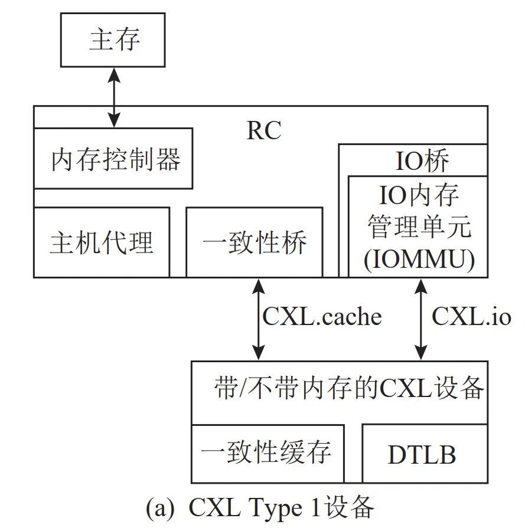
3.1.2 CXL Type 2 设备¶
- 支持协议：CXL.io + CXL.cache + CXL.mem
- 核心特点：这是功能最完整的设备类型。它不仅拥有自己的高带宽内存（如DDR或HBM），还能利用 CXL.cache 缓存主机内存，同时其自身的内存也通过 CXL.mem 被主机一致性地访问。
- Device 和 Host 可以互相缓存对方的内存数据，实现双向缓存一致性。
- CXL 将具备一致性的系统地址映射设备内存称为 HDM (Host-managed Device Memory)。 HDM 与 PCIe 私有内存的核心区别在于访问机制：PCIe 私有内存需通过 MMIO（memory-mappedIO）方式访问，而 HDM 则可提供与主机内存一致的访问方式。
- 类型：在 CXL 3.0 及以上版本中，CXL Type 2 设备的 DCOH 组件通过 2 种机制管理 HDM 的一致性。
- 基于 CXL.cache 协议的交互。此模式下的 HDM 称为 HDM-D（device coherent）。该机制实现了基于偏置模式的一致性模型，确保设备内存映射至系统地址空间时的一致性，同时支持设备以高带宽直接访问本地内存而无需大量的一致性开销（例如主机端监听），并允许主机以统一缓存语义访问设备内存。
- 基于 CXL.mem 的反向无效监听。设备通过专用 BISnp 通道直接发起对主机缓存的监听，并利用监听过滤器（Snoop Filter）按缓存行（Cache Line）粒度管理一致性。此机制会阻塞新的 M2S 请求直至 BISnp 消息被主机处理完毕，该模式下的 HDM 称为 HDM-DB（device coherent using backinvalidate）。
- 典型应用：带内存的一致性加速器，例如 GPU、FPGA、AI 加速器等
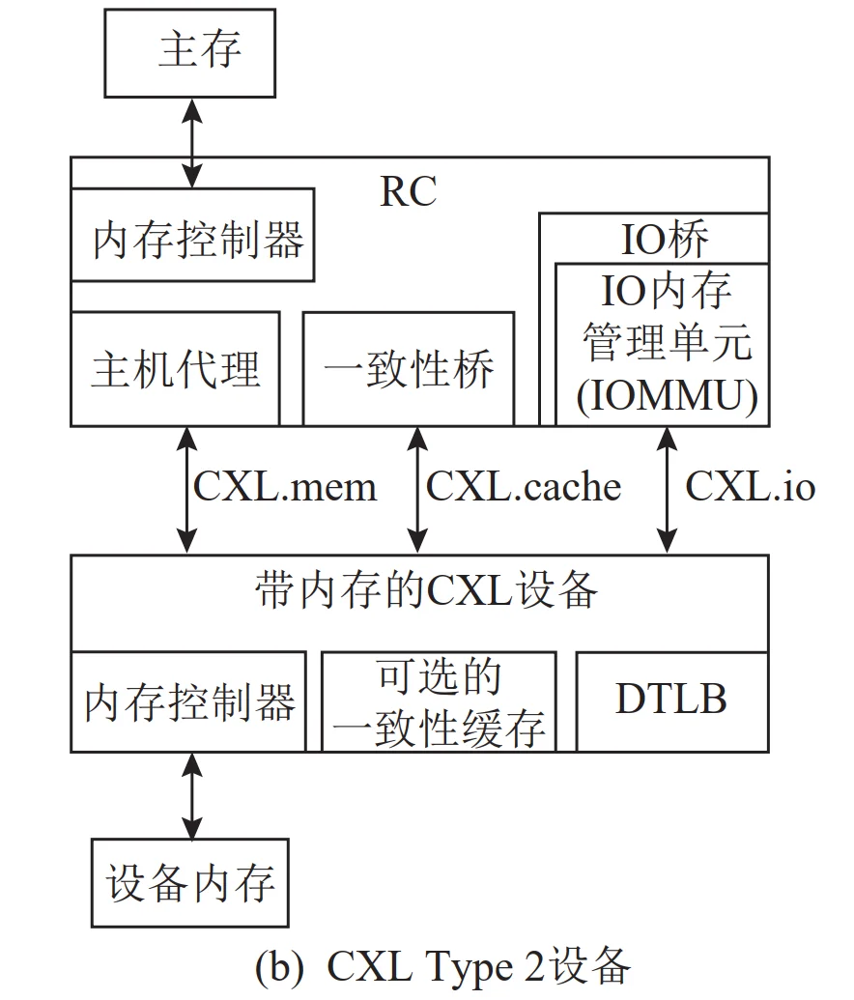
3.1.3 CXL Type 3 设备¶
- 支持协议：CXL.io + CXL.mem
- 核心特点：这类设备的核心目的是扩展系统的内存容量和带宽。它自身拥有大容量的内存（HDM），通过 CXL.mem 协议将其暴露给主机，但不支持 CXL.cache，即它不会去缓存主机内存。因此这类设备无需实现 DCOH 组件。而对于 CXL 3.0 及以上版本的 CXL Type 3 设备，若需支持HDM-DB 模式的内存，则需在设备中集成 DCOH 组件，以负责一致性管理。
- 典型应用：CXL内存扩展卡。它就像一个通过 PCIe 插槽连接的外置内存条，为服务器提供成本更低、更灵活的内存扩容方案
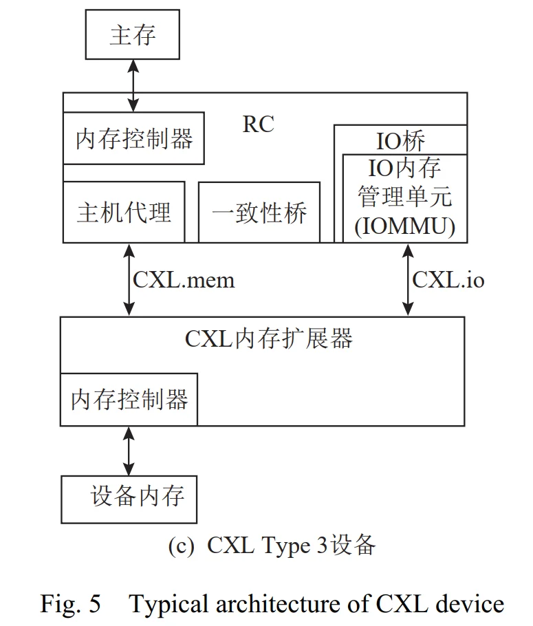
3.1.4 架构中的组件概念解释¶
上述三种类型的 CXL 设备架构中，包含了一些关键组件，下面逐一进行解释。
P1: Root Complex¶
主机侧的根复合体，是 PCIe 中的概念，PCIe 拓扑的“根”，通常集成在 CPU 或芯片组（北桥）内部。它连接 CPU/内存子系统与 PCIe 设备层次结构，是主机侧访问 PCIe 世界的桥梁。可以说，没有 RC，CPU 就无法与 PCIe 设备通信。
RC 在 PCIe 拓扑中的位置如下：
┌──────────────┐
│ CPU │
│ + Memory │
└──────┬───────┘
│ 内部总线
┌──────▼────────┐
│ Root Complex │
│ ┌─────────┐ │
│ │Root Port│──┼── PCIe 链路 ──► Endpoint（如 FPGA）
│ └─────────┘ │
│ ┌─────────┐ │
│ │Root Port│──┼── PCIe 链路 ──► Switch ──► 多个 Endpoint
│ └─────────┘ │
└───────────────┘
- Root Complex 内部可以包含一个或多个 Root Port。
- 每个 Root Port 是一个 PCIe 端口，对应一条 PCIe 链路，可直连 Endpoint 或连接 Switch 扩展更多设备。
- RC 本身不是 PCIe Endpoint，而是 PCIe 层次结构的根。
RC 的主要功能：
| 功能 | 说明 |
|---|---|
| 1. 发起和接收事务 | 代表 CPU 发起配置读写、存储器读写、I/O 读写、消息等 TLP；也接收来自 Endpoint 的请求（如 DMA、MSI 中断）。 |
| 2. 配置空间枚举 | 系统启动时，RC 发起配置读事务，扫描 PCIe 总线，发现设备，分配总线号/设备号/功能号，读取 BAR 并分配地址空间，使能设备。 |
| 3. 地址映射与路由 | 将 CPU 的物理地址映射到 PCIe 地址空间；根据 TLP 中的地址或 ID 将请求路由到正确的 Root Port 或内存控制器。 |
| 4. DMA 与内存访问 | 当 Endpoint 发起 DMA 读写时，RC 接收这些 TLP，并将其路由到内存控制器，完成对系统 DDR 的访问。 |
| 5. 中断处理 | 接收 Endpoint 发来的 MSI/MSI-X 消息写事务，将其转换为 CPU 可识别的中断信号。 |
| 6. 错误报告与管理 | 处理 PCIe 错误（如 AER），记录错误状态，向 CPU 报告。 |
| 7. 电源管理 | 管理 PCIe 链路的电源状态（L0/L1/L2/L3），协调设备唤醒等。 |
案例：RC 在 CPU-FPGA 系统中的作用
在 CPU + FPGA 通过 PCIe 连接 的系统中，CPU 内部的 RC 扮演核心角色：
-
枚举 FPGA
RC 发起配置读，读取 FPGA 的 Vendor ID、Device ID，为其分配 BAR 地址，使 CPU 能通过内存映射访问 FPGA 内部寄存器。 -
CPU 访问 FPGA 寄存器
CPU 执行一条写指令 → RC 将其转换为 Memory Write TLP → 通过 Root Port 发往 FPGA。
CPU 读 FPGA 状态 → RC 生成 Memory Read TLP → FPGA 返回 Completion TLP → RC 将数据交回 CPU。 -
FPGA DMA 写系统内存
FPGA 发起 Memory Write TLP → RC 接收 → 根据地址路由到内存控制器 → 写入 DDR。全程无需 CPU 搬运。 -
FPGA 中断通知 CPU
FPGA 发起 MSI 消息写 TLP 到 RC 的中断地址 → RC 将其转换为 CPU 中断 → CPU 执行中断服务程序处理数据。 -
错误处理
若链路出现错误，RC 可检测并记录，通过 AER 机制通知 CPU。
CXL 中，由于 CXL 复用了 PCIe PHY，所以 CXL-capable RC 不再只是传统 PCIe I/O controller，而还要连接 CPU 的 coherence subsystem, memory subsystem，由此，上述三张架构图中才出现了：
- Home Agent
- Coherence Bridge
- IO Bridge
- IOMMU
P2: Host Agent/Home Agent, HA 主机代理¶
可以把 HA 理解为：Host 这一侧某段物理地址的 coherence 管理者。
假设 Host DRAM 存在 address=A 的数据，可能同时存在：
- Core 0 L1: 缓存 A 副本
- Core 1 L2: 缓存 A 副本
- CXL Device HMC: 缓存 A 副本
那么决定：
- 谁能读？
- 谁能写？
- 谁必须 invalidate？
- 最新的数据在哪？
的就是 Host Coherence system，其中核心逻辑之一就是：HA
图 3. 演示的 transaction 中，就是 HA 在负责协调coherence。
P3: IO Bridge¶
IO Bridge 负责的是另一条完全不同的数据路径：CXL.io，而不是 Cache Coherence。
IO Bridge 主要负责：
- 设备寄存器 MMIO
- PCIe configuration
- 设备枚举
- 中断
- 传统 DMA
都更接近：
CPU → IO Bridge → CXL.io/PCIe → Device
而 HA 对应：
HA / Coherence system → memory + coherence semantics → CXL.cache/CXL.mem
P4: IOMMU¶
可类比普通单核 CPU 中的 MMU: 负责将 VA 转化为PA。而 IOMMU 完成的是：将 Device 发起的 DMA 地址，转化为 Host Physical Address。
更准确的，是类似：
同时负责：
- 地址翻译
- 权限检查
- 设备隔离
- 虚拟机隔离
案例：IOMMU 与设备隔离
例如 GPU 发出的 read address 0x12340000 请求，IOMMU 不会允许 GPU 随便访问整个 Host DRAM，IOMMU 会判断这个 device/process 允许访问哪个 Host Physical Page。
为什么 Device 端也要使用虚拟地址
Device 不仅发起的访问 Host DRAM 的 DMA 地址是虚拟地址，其访问本地内存的地址通常也是虚拟地址。
Q1: 为什么要用虚拟地址？
原因自然还是：内存碎片化、多进程隔离等原因；此外，对于设别访问 Host Memory，虚拟地址和 IOMMU 还能起到“安全隔离”的作用，如果没有IOMMU，设备驱动必须使用物理地址，这意味着一个恶意或有缺陷的设备可以直接读写任意物理内存，破坏系统。
Q2: 对于 Device → Host Memory，如何确保访问到 Host DRAM 的正确数据
——基于页表的地址翻译，IOMMU 通过查询驻留在 Host DRAM 中的 I/O 页表（I/O Page Table） 来完成翻译，这与 CPU 的 MMU 使用页表进行地址翻译的原理完全相同。页表由操作系统或 Hypervisor 维护，确保了翻译规则的权威性。
此外，设备隔离方面，每个DMA请求都携带一个标识，包含 Bus、Device、Function 号（统称 RID）。IOMMU 用它来查找该设备专属的页表基址，从而实现设备间的隔离。Arm 的 SMMU 中，这个标识被称为Stream ID。更细粒度的进程隔离方面，PCIe请求还可以携带一个20位的PASID。RID + PASID的组合唯一标识了一个设备上的一个特定进程的地址空间，使IOMMU能够使用正确的页表进行翻译。
Q3: Device → Device 本地 Memory 的几种情况
设备访问设备本地内存，不一定需要虚拟地址。“设备端自己的内存”可以指几类东西：显存/HBM/VRAM，设备本地 DDR，片上 SRAM、共享内存、寄存器文件，通过 PCIe BAR 暴露给 CPU 的设备窗口。对于这些内存，设备计算单元发出的地址可能是：
Case A. 简单设备，无设备 MMU: 例如一些固定功能加速器、DSP、老式 DMA 引擎、FPGA 逻辑，计算单元或 DMA 直接使用设备物理地址或本地总线地址。不需要 Page Table, MMU 以及 TLB。
Case B. 现代 GPU / NPU，有设备 MMU: 例如 NVIDIA GPU 有 GMMU，很多 NPU 也有内部 MMU，计算单元发出的 load/store 指令使用设备虚拟地址，例如 GPU VA。利用设备本地的 MMU 和 TLB 翻译即可，无需 PCIe 和 IOMMU 介入。
Case C. 统一虚拟寻址 / 共享虚拟内存: 在 SVA (Shared Virtual Addressing)、SVM (Shared Virtual Memory)、统一内存等模式下，CPU 和设备共享同一个进程虚拟地址空间。设备计算单元发出的就是进程虚拟地址。设备 MMU 先做 Stage-1 翻译，可能得到中间物理地址。如果要访问 Host DRAM，再经过 IOMMU/SMMU 做 Stage-2 或系统级翻译。如果访问的是设备本地内存，可能只到设备 MMU 就结束。
P5: DTLB, Device Transfer Lookaside Buffer 设备端 TLB¶
明白了“为什么设备端也要使用虚拟地址”以及 IOMMU 的作用后，DTLB 的作用就很容易理解了——就是一个 Device 端的 TLB:
此外，DTLB 存的是地址翻译结果，不是数据，这一点与普通 TLB 一致。
DTLB, DCOH, Snoop Filter
- DTLB: 地址翻译
- DCOH Cache: 真正的数据 Cache Line
- Snoop Filter: 一致性 metadata
P6: Coherence Bridge, 一致性桥¶
它并不是像 PCIe Root Complex 一样特别标准化的统一硬件名称。在架构图中，更适合把它理解成：Host 内部 coherence protocol 与 CXL.cache/CXL.mem protocol 之间的协议桥。
CPU 内部可能使用某种厂商自己的 coherent fabric，例如：
- Intel internal coherent protocol
- AMD coherent fabric
- ARM CHI
- ...
但 CXL link 上传的是：
- CXL.cache packets
- CXL.mem packets
所以中间必须进行：
例如：
所以它可以近似理解为：coherence transaction 的 protocol adapter。
P7: DCOH, Device Coherency Engine 设备端一致性引擎¶
可以简单理解为：设备侧 coherence controller
- DCOH 负责维护设备缓存与主机缓存的一致性，处理 CXL.cache 请求；
- Type 2 中还要处理来自主机的 CXL.mem 请求；
- 如果支持 Back-Invalidate，还需要实现 Snoop Filter
所以 DCOH 可以处理这几类工作：
- Device 缓存 Host Memory 的一致性（CXL.cache）
- Host 缓存 HDM 的一致性（CXL.mem）
- HDM-DB → Snoop Filter BISnp/BIRsp
DCOH Cache 还包括：
- HMC: Host Memory Cache，缓存主机内存数据
- DMC: Device Memory Cache，缓存设备本地内存数据
3.2 HDM-D 与 HDM-DB¶
HDM-D 和 HDM-DB 是 CXL Type 2 设备中两种不同的 Host-managed Device Memory (HDM) 一致性管理模式。
它们围绕的对象都是：Host-managed Device Memory (HDM)。处理的问题都是：如何一致性管理 "Host cache" 的 Device Memory 以及 "Device cache" 的 Device Memory。
它们与 Host Memory 无关。管理 Host Memory 一致性的是 HA (Home Agent)，不能弄混淆。
3.2.1 HDM-D¶
HDM-D 采用 "Bias Mode + CXL.cache" 来管理 HDM coherency。
这里最关键的是：
- Host Bias
- Device Bias
可以粗略理解为“当前谁对这块 HDM 拥有更直接的访问权限”。
例如 Host Bias 时，Host 可以比较自然地访问：
Host CPU → Cache HDM → CXL.mem → Device Memory
如果进入 Device Bias，此时 Device 可以：
Device Compute Unit → Device Cache → Device Memory
避免每次都进行昂贵的 host-side coherence 操作。所以 HDM-D 的思想更接近：通过 Bias ownership 切换，控制当前 Host 还是 Device 更“拥有”这片 memory。
其 coherence coordination 依赖 CXL.cache。
疑惑
这段解释非常抽象，目前完全不懂（2026-10-15）
3.2.2 HDM-DB¶
HDM-DB: Device Coherent using Back-Invalidate
不再主要依靠 Bias switching 来解决这个问题，而增加：
- CXL.mem BISnp
- CXL.mem BIRsp
由 Device 主动 snoop Host。
核心结构就是 Snoop Filter，按 cache-line 粒度跟踪 Host 的缓存状态。
Back-Invalidate: 为了支持主机一致性缓存 HDM，在设备意图访问 HDM 时，DCOH 中的 Snoop Filter 会查询主机有无缓存副本，如果有就进行 Invalidate。详细流程可以参见图 4.。
它与 Host memory 无关，Host Memory Coherence 的维护不需要 Snoop Filter 与 BI，而是依靠 Host HA，详细流程可以参见图 3.。
所以两条路径其实非常“镜像”：
================================================
Host Memory 是 home
Host HA
↓
tracks Device cache
↓
CXL.cache snoop
↓
Device
================================================
Device Memory / HDM 是 home
且采用 HDM-DB
Device DCOH / SF
↓
tracks Host cache
↓
CXL.mem BISnp
↓
Host
================================================
3.2.3 Snoop Filter 到底记录什么？¶
Snoop Filter 关注的问题是：哪些 HDM cache lines 被 Host 缓存了？
例如 SF 可能维护着这样一个表格：
多 Host 时可能更类似于：
3.2.4 Type 3 只是内存扩展器，为什么还需要 HDM-DB？¶
普通 Type 3: HDM-H¶
普通 Type 3 通过：
HDM-H: Host-only Coherence
管理主机缓存 HDM 的一致性
——But! 桥豆麻袋！ 没有 Device Compute Unit 的 Type 3 Memory Expander，哪里来的一致性需要维护？
只有 Host CPU 一个计算单元！
那问题简单多了，即使：
- Core 0 cache A
- Core 1 cache A
- Core 2 cache A
没有任何问题。因为这几个 cache 都属于同一个 Host coherence domain—— Corherence 仅在于当前这一个 CPU 的多 Core，根本没有 Device！
所以，CPU 自己原本的：
- MESI/MESIF coherence protocol
- Host Agent
- LLC coherence
就能解决缓存一致性。
Device 根本不用知道：
- Core 0 有没有 A
- Core 3 有没有 A
因为根本没有 Device Unit！
于是也就：
- 无需 DCOH
- 无需 Snoop Filter
这就是：HDM-H = Host-only Coherent
Type 3，只是一个内存扩展器！
那 CXL 3.0 Type 3 为什么突然需要 HDM-DB？¶
不是因为 CXL 3.0 Type 3 有 Device Compute Unit，而是因为 CXL 3.0 出现了：
- Multi-Host Shared Memory
即这样的图景：
现在两个 Host: A 和 B 不是同一个 CPU Coherence domain，也就是说
- Host A 的 HA：完全不知道 Host B LLC 在干什么
- Host B 的 HA：也不知道 Host A LLC 在干什么
如果：
- Host A cache A = Shared
- Host B wants write A
谁让 Host A invalidate？
传统 Host A HA 做不到，因为 Host B 不属于它的 coherence domain。因此必须出现一个更高层的 coherence 管理者。这个角色可以由 Type 3 Device DCOH 承担。
于是：
所以：HDM-DB 对 Type 3 最重要的意义之一，就是把多个独立 Host coherence domains 连接起来。
3.3 两种方向的缓存一致性总结¶
① Device 缓存 Host Memory¶
Host
┌─────────────┐
CPU caches ←→│ HA │
└──────┬──────┘
│
Coherency Bridge
│
CXL.cache
│
┌──────▼──────┐
│ DCOH │
│ │
│ HMC │
└─────────────┘
Device
- 控制权：HA → DCOH
- 典型 snoop：H2D Snp*
② HDM-DB：Host 缓存 Device Memory¶
Host
┌─────────────┐
CPU caches │ HA │
▲ └─────────────┘
│
│ BISnp
│
CXL.mem
│
┌─────┴───────────────┐
│ DCOH │
│ │
│ Snoop Filter │
│ │
│ Device Memory │
└─────────────────────┘
Device
- 控制权：DCOH → Host
- 典型 snoop：S2M BISnp
因此，如果只留下两句话，可以记：
- Host Memory 是 home：Host HA 管 coherence，Device 通过 CXL.cache 成为 Host coherence domain 的一部分。
- HDM-DB 中 Device Memory 是 home：Device DCOH + Snoop Filter 跟踪 Host 对 HDM 的缓存，并通过 CXL.mem Back-Invalidate 主动让 Host 失效缓存。
3.4 Coherence Domain¶
通过前述内容可以体会出一个 "Coherence Domain" 的概念：
Coherence Domain 是这样一个范围：其中所有可能缓存某一组 coherent memory 地址的 caching agent，都被某套一致性机制统一协调，从而保证对这些地址看到一致的数据。
例如，在 CXL Type 3 中，只有一个 Host CPU 而 Device 端没有 Compute Unit，那么Host CPU 其各级 Cache, DRAM 以及 CXL Memory 就形成了一个 Coherence Domain，因为该 Domain 内的所有 Cache 满足一致性协议，而该 Domain 外没有其他 Cache 或者其余 Cache 缓存的数据与该 Domain 无关、不受该 Domain 的一致性约束。
又如，一个普通多核 CPU，各个 Core 的 Private Cache 以及 LLC Public Cache 对 DRAM 需要遵守同一套一致性关系，所以它们属于同一个 coherence domain。
需要注意：“同一个 coherence domain”不代表硬件内部必须跑完全一样的协议
例如，CPU 内部遵循的一致性协议可能是 MESIF/CHI，也可能是厂商私有 coherence protocol，而 Host CPU 通过 Coherence Bridge 与 CXL Device 连接，虽然两边并不一定使用完全一样的：
- state machine
- messsage encoding
- transaction format
但它们仍然可以属于同一个 coherence domain。因为 Coherency Bridge / HA / DCOH 可以把两边的事务翻译并协调起来。
所以 coherence domain 的关键不是：
“所有 cache controller 代码必须实现完全相同的 MESI FSM”
而是：
这些 caching agents 之间存在一个完整的一致性机制，使得冲突访问一定会被发现并正确处理。
3.5 CXL switch¶
3.5.1 CXL 2.0 Switch 与内存池化¶
在 CXL 1.0/1.1 架构中，受限于直连拓扑，单个主机能连接的 CXL 设备数量有限；而 CXL 2.0 引入的单级交换机突破了这一瓶颈，不仅能够连接多个 Device，还支持多个 Host 连接到同一台交换机，显著提升系统的扩展性。通过支持连接多个主机的 CXL 交换机，CXL 2.0实现了单逻辑设备（single logical device，SLD）和多逻辑设备（multi-logical device，MLD）的内存池化（Memory Pooling）。
该功能可将分散在不同物理设备上的内存资源整合为一个逻辑上统一的内存池。通过其集成的 Fabric 管理器，该池化内存能够供多个主机并根据工作负载需求进行灵活的分配与使用。
考虑如下架构（图 6.）：
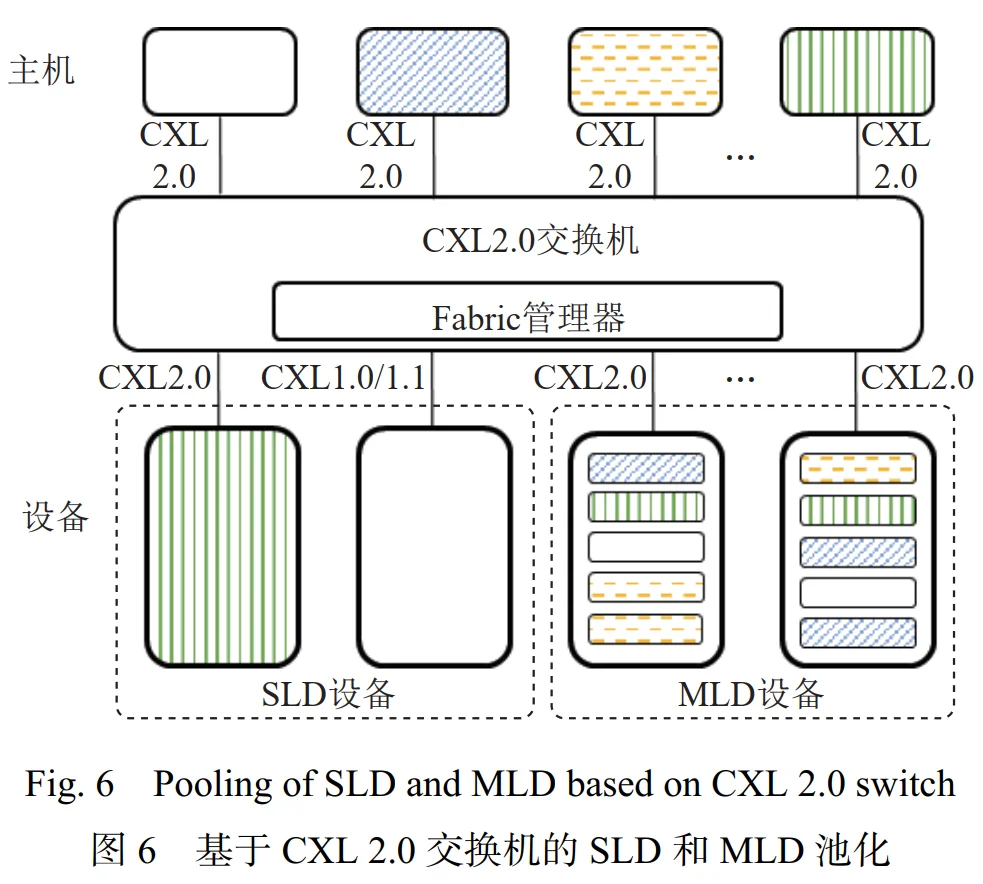
其中，主机和设备侧同一个域的资源用相同的填充图案标识。
注意，这里的“域”并非我们之前提到的 coherence domain，具体是什么见下方。
图 6. 可以抽象为：
Host 1 Host 2 Host 3 Host N
│ │ │ │
└───────────┴──────┬────┴───────────┘
│
CXL Switch
│
┌─────────────┼───────────────┐
│ │ │
Device A Device B Device C
SLD MLD MLD
每一条竖线都是一条 CXL link。所以 CXL Switch 在最直观的层面上和 Ethernet Switch、PCIe Switch 有一点类似：
它提供多个端口，把多个 Host 和多个 CXL Device 接入同一个交换基础设施，再把 Host 发出的事务转发到正确的 Device。
但 CXL Switch 比简单的 packet switch 多了一件非常重要的事情：它可以参与 CXL Memory Resource 的动态组织和分配。这就是“内存池化”的概念。
什么是内存池化？
假设有四台服务器：
- Server 0: CPU - 512 GB
- Server 1: CPU - 512 GB
- Server 2: CPU - 512 GB
- Server 3: CPU - 512 GB
这些 DRAM 和 CPU 是刚性绑定的。因此可能出现：
- Server 0: 用了 500 GB
- Server 1: 用了 450 GB
- Server 2: 用了 80 GB
- Server 3: 用了 50 GB
虽然整个机柜还有大量空闲 DRAM，但是：Server 0 不能直接获取到 Server 2 空闲出来的那 400 多 GB DRAM。
这就是：
- resource standing
- fragmentation
- 内存利用率不足
CXL 想把一部分内存从“服务器私有固定资源”变成：
CXL Memory Pool
┌───────────┐
│ 2 TB DRAM │
└───────────┘
│
CXL Switch
┌───────────┼───────────┐
│ │ │
Host 1 Host 2 Host 3
需要多少，就给哪个 Host 分多少。
这就是 Memory Pooling：将若干物理内存资源组织成一个资源池，再动态地将其中的资源分配给不同 Host。
注意“pooling”首先强调的是资源的可分配性，而不是“多个 Host 同时读写同一地址”（Memory Sharing）。
图 6. 中相同图案的区域，其实就是想要表达：这些 Host CPU, Host DRAM, CXL Device Memory 属于同一个“域”：在同一个域下，Host CPU 可以使用从 CXL Device 配置好的、专门划分给这个 Host CPU 的 Resource，而其他 Host CPU 无法访问这个 Resource。这个“域”是CXL Switch 的资源分配域，而不是我们前面讨论的 coherence domain。准确来说，其定义为：一个 Host 及其分配到的设备资源所构成的逻辑资源范围。
也就是说：
- 绿色 Host → Switch → 绿色 Device Resource
- 蓝色 Host → Switch → 蓝色 Device Resource
它们虽然经过同一个物理 CXL Switch，但逻辑上是：
- Domain A
- Domain B
- Domain C
- ...
彼此隔离的资源集合。
3.5.2 内存池化中的 SLD 与 MLD¶
SLD：Single Logical Device，可以近似理解成：一个物理 CXL Device 对外就是一个整体资源。例如 512 GB 的 Device DRAM：
- 某个时刻把这个设备分给 Host 1，那就是整块划分给 Host 1，Host 2/3/4 无法访问。
- 某个时刻把这个设备分给 Host 2，那就是整块划分给 Host 2，Host 1/3/4 无法访问。
MLD：Multi-Logical Device。MLD 表示可以在逻辑上把一个物理设备：
逻辑上切成多个 Logical Device：
┌─────────────────────────┐
│ LD0 → Host 1 │
├─────────────────────────┤
│ LD1 → Host 2 │
├─────────────────────────┤
│ LD2 → Host 3 │
├─────────────────────────┤
│ LD3 → Host 4 │
└─────────────────────────┘
也就是图 6. 中很多不同颜色的小条。
这就是：同一个物理 CXL 内存设备，被逻辑切分后同时向不同 Host 提供独立资源。
因此 MLD 比 SLD 更适合细粒度的 memory pooling。
Attention
但是仍需注意，即便是 MLD 可以将同一 Device 切分成不同的 Logical Device，每一个域仍然是独立的资源集合，不同 Host 之间仍然无法直接访问对方的 Logical Device。MLD 类内存池化并不意味着不同 Host 可以共享同一块内存地址空间。
此外，值得注意的是，虽然我们说图 6. 的“域”与 "coherence domain" 不是同一个概念，但是图 6. 划分出来的不同的“域”，由于其资源隔离特性，它们各自内部是遵循 cache coherence 的，因此它们各自也都是 coherence domain。
3.5.3 CXL 3.0: 内存共享¶
进一步地，CXL 3.0 实现了多级交换机，并引入内存共享（Memory Sharing） 的概念，其中，内存共享即:
- 允许多个主机同时访问 CXL 设备的同一块内存区域，
- 同时保证每个主机缓存的都是共享区域数据的一致性副本。
- 并且 CXL 3.0 实现的是硬件维护的缓存一致性，无需软件的管理协调可以提高数据流效率和内存利用率
图 7 展示了一个基于 CXL 3.0 交换机进行内存池化和共享的拓扑示例。
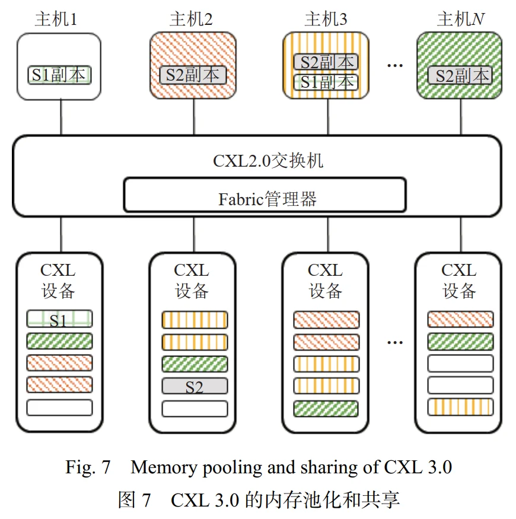
这张图并没有把真正的“多级 Switch”画出来，而主要展示的是 CXL 3.0 的 Memory Pooling + Memory Sharing。
其中 CXL 设备中的 S1 和S2 是共享区域：
- S1 由 Host 1，3 共享
- S2 由 Host 2，3，N 共享。
- 其余图案构成的区域依然是独立的资源集合
这里发生了图 6 中绝对不会发生的事情：
- Host 1 cache S1
- Host 3 cache S1
这两个 cache 中可能同时存在同一个物理 HDM cache line
于是问题立刻来了——Cache Coherence。
Host 1 和 Host 3 是完全独立的 Host，甚至可能是两颗不同服务器的 CPU。
- Host 1 自己的 HA 并不知道：Host 3 LLC cache 了 A
- Host 3 的 HA 也不知道：Host 1 LLC cache 了 A
所以传统单 Host coherence system 已经不够用了。
这个时候，我们就需要请 HDM-DB 发力了：
Snoop Filter 可以概念性地记录：
- Cache A Line
- Host 1 : has copy
- Host 2 : no copy
- Host 3 : has copy
- Host N : no copy
当某个事务要求排他的修改权限时：
DCOH → BISnp Host 1 → Host 1 (A → I) → BIRsp
然后才允许冲突操作继续。论文前面在介绍 Back-Invalidate 时恰好强调：
这种机制在同一 Device Memory 被多个 Host 共享时，可以有效管理多 Host 和 Device 间的缓存一致性。
图 7. 也可以用来理解 coherence domain
coherence domain 不必是整个 Switch。'
对于 S1，S1 coherence participants:
- Host 1
- Host 3
- Device / Home of S1
对于 S2，S2 coherence participants:
- Host 2
- Host 3
- Host N
- Device / Home of S2
因此：
- Domain(S1) = {H1, H3, S1 Home}
- Domain(S2) = {H2, H3, HN, S2 Home}
3.5.4 CXL 3.0: 多级 Switch¶
那 CXL 3.0 所谓的“多级交换机”到底是什么？虽然图 7 没真正画出来，但概念其实不复杂。
CXL 2.0 的 Switch 架构可以理解为：
这种树状拓扑，或者更复杂一点的网络拓扑（多 Host + 多 Device）
CXL 3.0 允许继续：
甚至：
Host 0 Host 1 Host 2 Host 3
\ / \ /
Switch D Switch E
\ /
Switch A
/ \
Switch B Switch C
/ \ / \
Dev0 Dev1 Dev2 Dev3
多级 Switch 本身解决什么问题？
——规模
单台交换机只有有限端口，比如 16 ports，那一层 Switch 最多就接有限数量设备。如果允许：
Switch → Switch
那么：
节点数就可以大幅扩展。于是 CXL 不再只是“CPU 主板上插几个 CXL memory card”，而开始变成：一个由大量 Host、Memory、Accelerator 组成的 memory-centric fabric。
这也是 CXL 3.0 从“高速总线”向“Fabric”发展的关键一步。
但规模扩大以后，会新增哪些问题？很容易理解：
- 资源定位：Host 发出某个地址的 load/store 后，系统必须知道这个地址实际落在哪个 Device、哪个 memory region，甚至哪个远端 Switch 后面
- 隔离与资源管理：哪些 Host 可以访问哪些 Region？
- 一致性：如果同一 shared region 被多个 Host cache，就必须维护各个 Host Cache 与 HDM 的一致性。
- 性能：以前："Host → Switch → Device"，现在："Host → Switch → Switch → Switch → Device"，每一级都会引入延迟、congestion、queueing等问题。
3.6 CXL 产品研发进展¶
3.6.1 CXL 控制器 IP¶
CXL 控制器 IP 实现了完整的 CXL 协议栈，支持 CXL.io，CXL.cache，CXL.mem 这 3 个子协议，负责封装、解析和传输设备间的请求、响应事务和数据。同时，它保障物理链路稳定性（如链路训练）与数据链路可靠性（如 CRC 校验、Flit 重传），并提供设备枚举、配置和管理等关键控制功能
3.6.2 CXL Type3 设备¶
CXL 内存扩展控制器在单个芯片中集成了 CXL 控制器、 DDR 控制器和多种外围接口，利用 CXL.mem 协议实现低延迟内存扩展，利用 CXL.io 协议实现设备管理，是内存扩展和池化的关键组件。
目前产业界尚未有 CXL Type 1 或 CXL Type 2 产品，主要原因是 CXL.cache 协议以及设备 DCOH 支持逻辑的实现相对较为复杂。
3.7 CXL 设备性能特点¶
3.7.1 CXL 真实物理设备的性能特点¶
CXL 官方 Spec 文档[10] 的合规性测试中给出了CXL.mem 及 CXL.cache 子协议中典型事务收发的推荐时延，即设备收到事务消息后经过处理再发出事务消息的时间间隔，如表 4 所示：
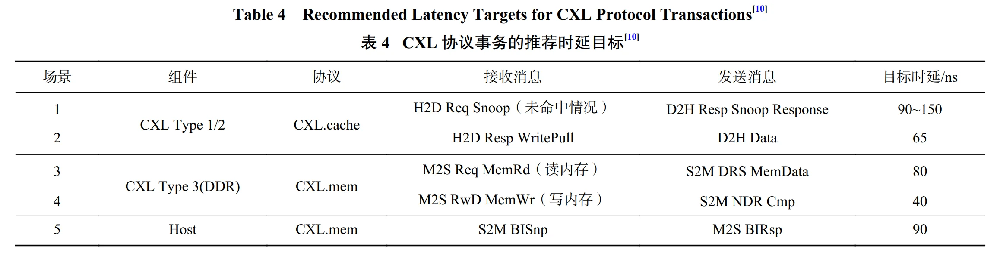
文献 [37] 中对 CXL 内存访问链路上的每个模块给出了理论上的时延估计，如图 8 所示:
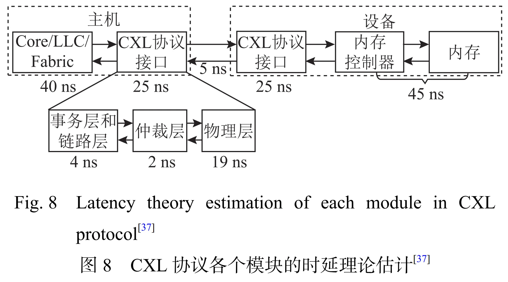
总体上，影响 CXL 内存访问性能的因素主要包括 3 点：
- CXL 协议接口包括主机侧和设备侧的处理效率；
- 内存控制器如引入读写交织、访问控制等的实现效率；
- 缓存未命中的情况下，主机侧发起的内存访问请求转化为 CXL 内存请求的效率
文献 [39] 使用基于 ASIC 实现的 CXL 内存设备，在多 Socket 系统中测试了本地与远端 CXL 内存的访问性能，并分析了不同读写比例下的时延带宽性能特点。结果如表 6 所示，通常情况下全部为读操作读写比例为 1∶ 0 的时延最低，跨 Socket 的远端内存访问由于需经过 CPU 间的 UPI（ultra path interconnect）链路，导致时延相对更高。 CXL 内存的最大带宽并未出现在全部为读操作场景下，原因在于全部为读操作的场景未能充分利用 PCIe 的双向传输能力。整体上，跨 Socket 的远端 CXL 内存由于访问路径长，时延带宽性能均不如本地 CXL 内存，因此应尽量避免
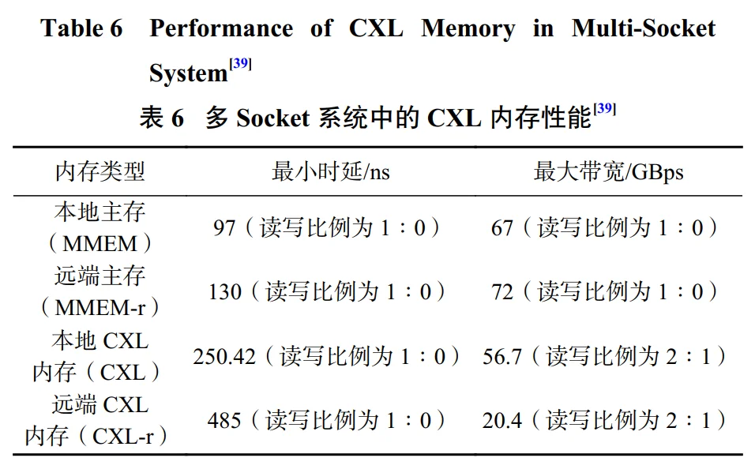
IV. CXL Type 3 设备的研究进展¶
4.1 CXL 内存管理研究进展¶
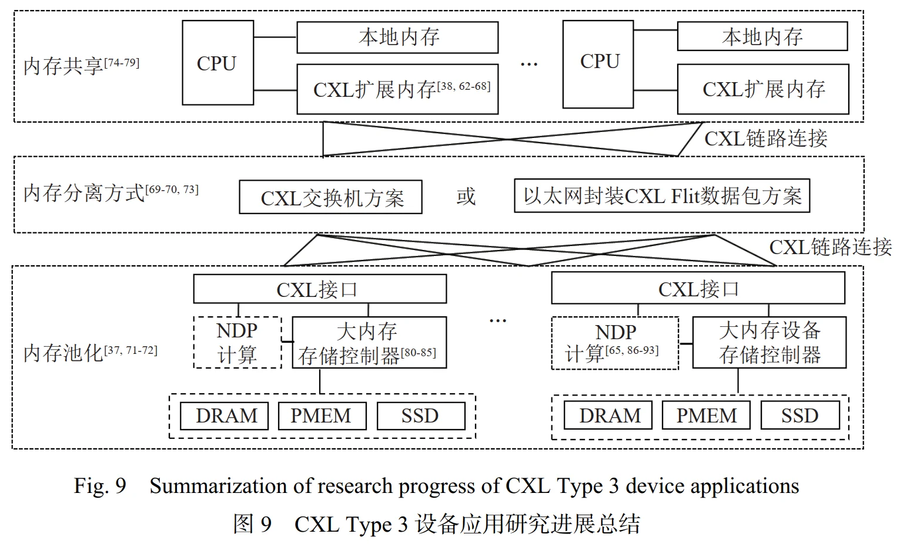
具体地：
- 合理设计策略，既能利用 CXL 内存带来的容量与带宽扩展，又能避免 CXL 内存的性能劣势。
- 利用 CXL 的独立性与可扩展性实现内存分离架构，替换现有基于网络的内存分离方案，以提升远端内存访问效率。进一步可构建更加高效的内存池化系统，提高云计算场景下的内存利用率，降低整体的总拥有成本（total cost of ownership，TCO）。
- 利用 CXL 3.0 引入的多主机内存共享替换现有基于网络的分布式内存共享方案，提供更高效的共享内存访问方式。
- 利用 CXL 协议接口可支持多种存储介质的特点引进新型大容量存储介质，比如持久内存、闪存（flash memory）等，在设备控制器层面进行优化设计，如内存寻址方式的转变、访存效率的优化等，以实现大容量内存设备的高效访问。
- CXL 设备端集成计算单元，支持近数据处理，可针对性地优化上层应用的性能，实现内存密集型任务的性能提升
4.1.1 CXL 扩展内存管理优化¶
CPU 能够以相同的方式访问主存和 CXL 内存，但 CXL 内存与主存存在明显的差异，其容量更大，可达数百 GB 至 TB，但性能更差，访问时延是主存的 2~3 倍。因此重构了存储层次结构，如图 10 所示。在 CXL 内存上运行应用需考虑其带来的性能影响，比如时延敏感型的应用直接在 CXL 内存上运行可能会导致性能下降。
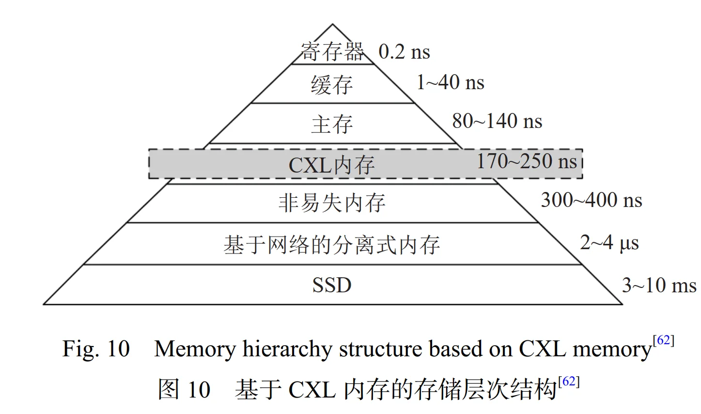
V. CXL Type 1/2 设备的应用研究进展¶
与 CXL Type 3 设备类似，CXL Type 1/2 设备也可以使用带 CPU 的 NUMA 节点对进行模拟，但其性能特点与真实设备存在差异[41]，同时，Type 1/2 的真实设备非常稀缺，因此关于 Type 1/2 设备的应用研究进展较少。
5.1 应用场景及案例¶
CXL Type 1 设备中包含一致性缓存和用于加速页表查询的 DTLB 组件，它的潜在应用是智能网卡这类适合流式处理逻辑的设备。在卸载 CPU 计算的同时，智能网卡可以基于 CXL.cache 协议以缓存一致性的方式访问主机内存，以提升与主机的交互效率。
CXL Type 2 设备中同时拥有内存和计算单元，它的典型应用是异构计算场景。现有的异构计算模式是 CPU 负责控制和任务调度，各个加速器负责专门的任务，CPU 负责把数据分发到各个加速器上，加速器完成计算任务后将结果发送回 CPU 主存[112]。引入 CXL.cache 之后，设备可以缓存主机内存数据，支持加速器与主机间频繁的细粒度数据交互，提高主机与设备间数据传输效率，从而加速整个任务的计算。
5.2 Type 1/2 硬件实现的挑战¶
当前商用 CXL Type 1/2 设备的普及程度远不及CXL Type 3，一个重要原因是 CXL Type 1/2 设备需要维护设备缓存与主机的一致性，这对设备侧厂商来说难度和成本都很高。
以图 15 中 Intel AgilexTM 7 CXL
Type 2 FPGA[41] 设备为例，设备由 HIP（hard IP），DCOH，CAFU（coherent request accelerator functional unit），HDM内存子系统等组成，HIP 负责 3 个子协议的发，DCOH负责维护设备缓存与主机缓存的一致性，CAFU 是设备具备一致性请求的加速功能单元。
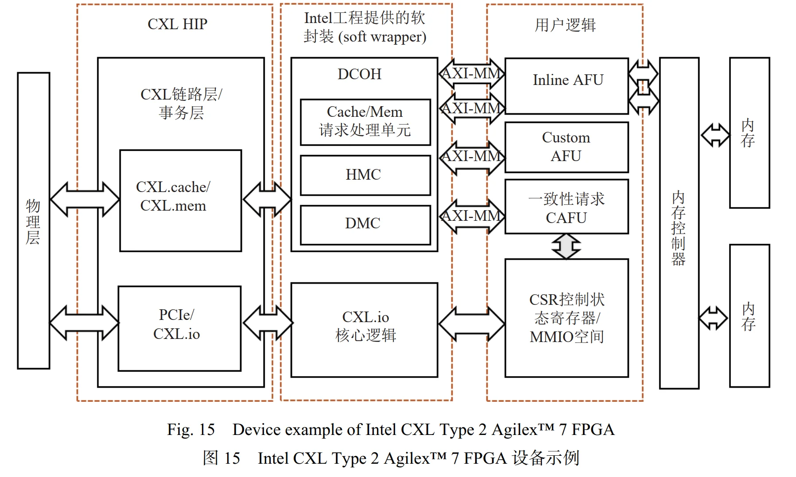
DCOH 要实现的一致性维护功能重要且繁杂，主要有：
- 对于 CXL Type 1 设备， DCOH 负责管理 CXL.cache 的请求和处理响应，即接收 CAFU 发出的系统内存访问请求，访问 DCOH cache（HMC，对主机内存的 cache；DMC，对设备内存的 cache），根据 cache 命中情况再确定是否发送以及发送哪种 CXL.cache 请求事务给主机，或是直接访问设备本地内存。相应地，也需要根据 CXL IP 接收到的主机 cache 请求或响应进行对应的处理操作。
- 对于 CXL Type 2 设备，DCOH 不仅需要处理 CXL.cache 协议请求，还需处理来自主机的 CXL.mem 内存访问请求，即接收并处理来自主机的 CXL.mem 请求事务、向 HDM 子系统发出 HDM 请求，向主机返回相应的响应事务。
- 如果 CXL Type 2 设备需要支持反向无效监听，DCOH 还需要实现监听过滤器（snoop filter）等组件，支持对主机缓存状态的跟踪（tracking），这对设备厂商的门槛要求进一步提高。
而对于 DCOH cache， HMC 与 DMC（device memory cache）的缓存大小、结构和缓存管理策略需要根据设备自身需求特点合理设计。例如 Intel 给出的FPGA DCOH 实现中[41]，HMC 被设计为 128 KB 大小、4 路组相连结构，DMC 被设计为 32 KB 大小、直接映射结构。缓存大小与主机内存以及设备内存容量相关，缓存结构设计也需要考虑特定应用场景下的需求、不同应用访存行为特点等，这些因素会影响DCOH cache 命中率，进而影响 CXL 互连性能。
此外，用户逻辑 CAFU 接口设计中，需要通过读、写通道信息通知 DCOH，设备访问的目标是主机内存还是 HDM 地址、指定 DCOH 缓存的状态，以及发出刷新缓存行等请求。同时，作为 CXL IP 和 CAFU 之间交互的桥梁，DCOH 还要实现 CXL 协议接口 CPI（CXL cache/mem protocol interface）与 CAFU AXI 接口之间的一致性转换，确保一致性请求的正确交互。
DCOH 和 CAFU 模块的设计与设备具体需求密切相关，通常 CXL IP 供应商并不会直接提供这部分代码实现。由上述 3 点也可以看出，DCOH 及相关接口的开发难度较大，同时也需要解决加速器软件等生态（例如 NVIDIA GPU 的 CUDA 生态）与 CXL 系统软件栈适配的问题，短期性能收益可能不及其复杂性，这也是目前 CXL Type 2 设备市场应用相对较晚的原因。